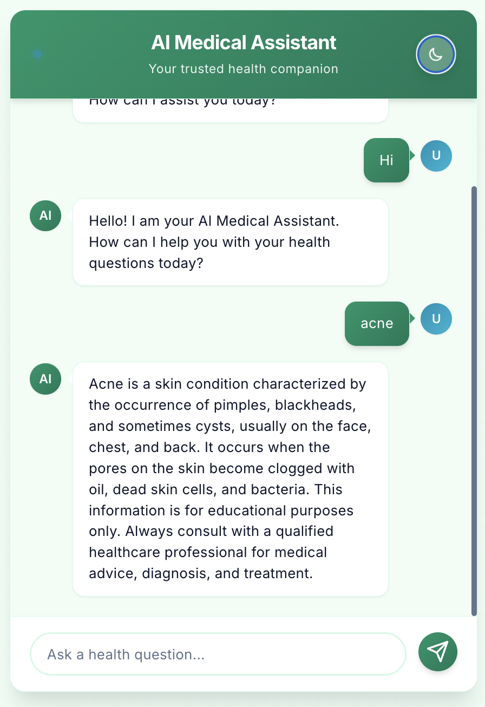
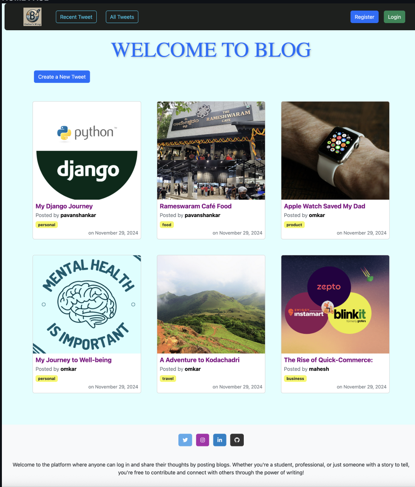

I’m Omi (Omkar S Devadas), an aspiring AI/ML Engineer and Full-Stack Developer, currently pursuing my MCA at MS Ramaiah Institute of Technology. With a strong foundation in Python, Java, SQL, Flask, Django, and JavaScript, I love solving real-world problems by combining Machine Learning, Deep Learning, and Web Development.
My technical journey includes building AI-powered chatbots, recommendation systems, deep learning applications (CNNs, Transformers), and scalable web apps. I am passionate about Generative AI, Natural Language Processing (NLP), and model explainability (SHAP).
Beyond coding, I focus on problem-solving, performance optimization, and creating user-friendly interfaces. I’m eager to contribute to impactful projects, grow as a professional, and explore innovations at the intersection of AI and software engineering.
Built an AI-powered chatbot that answers sports and health queries by retrieving information from local PDFs and Wikipedia. Implemented semantic search using Pinecone with Google GenAI embeddings and LLM-based synthesis.
Tech: Python, Flask, LangChain, Groq LLM, Pinecone
Developed a conversational Medical Bot to provide basic health guidance. Integrated NLP with a Flask backend to handle user queries and suggest medications, precautions, and relevant information for common conditions. Enhanced with dynamic response handling for better user interaction.
Tech: Python, Flask, NLP, HTML, CSS
Developed a content-based recommender using NLP techniques. Preprocessed genres, overviews, and keywords with NLTK, then used cosine similarity to recommend similar movies.
Tech: Python, Flask, Pandas, NLTK, scikit-learn
Flask web app for skin lesion classification using a CNN trained on the HAM10000 dataset. Supports image uploads, real-time classification into 7 skin types, and displays probability charts with medical details.
Tech: Python, Flask, TensorFlow, Keras
A Django-based blogging platform with user authentication, role-based access control, personalized content management, and a commenting system for engagement.
Tech: Python, Django, SQLite